Desafio técnico · Senior AI Engineer
iFood · Engenharia de IASabor daMaria.
Da despensa ao cardápio, com um agente que pergunta antes de recomendar e calcula antes de precificar.
A receita desta solução
Conversar.
Validar.
Decidir.
Glaucia Lemos
Para Lucas Rolim & Hildebrando Azevedo
01 · O que é o desafio?
Uma consultora de cardápio
e preço para a Dona Maria.
Ela abre o primeiro delivery. Sabe o que tem e quanto pagou, mas não sabe o que cozinhar nem quanto cobrar.
despensa_dona_maria.xlsx
37 ingredientes · abas Despensa e Precos
R$ 80
para complementos
10%
de taxa sobre a venda
Obrigatório: Hermes Agent customizado
2.1 · PESQUISA
Buscar receitas reais na web e ouvir a opinião dela.
2.2 · RESTRIÇÕES · O CORAÇÃO
Descobrir equipamentos, técnicas e limites antes de ela comprar.
2.3 · INGREDIENTES
O que já tem, o que falta e se cabe no orçamento.
2.4 · CMV E PREÇO
Calcular o custo, propor 2–3 preços e deixar ela decidir.
02 · Qual problema resolve?
Aqui, uma recomendação errada
vira prejuízo real.
O que consigo produzir com o que tenho?
Tenho equipamento, técnica e tempo para isso?
Quanto cobrar para não perder dinheiro?
O QUE PODE DAR ERRADO
- Comprar ingredientes e descobrir depois que não consegue cozinhar.
- Planejar R$ 80 por prato e estourar o orçamento total.
- Aplicar a taxa sobre o custo, e não sobre a venda, e cobrar abaixo do piso.
- O LLM inventar um número, esquecer um fato ou “aceitar” um prato sozinho.
03 · Solução escolhida
O LLM conversa. O código valida.
A Dona Maria decide.
Hermes Agent
Conduz a conversa, pesquisa receitas, faz as perguntas certas e explica os números.
context file · skill · plugins
Python + MCP
Valida viabilidade, orçamento e preço com regras determinísticas e Decimal.
6 tools · stdio
SQLite
Guarda fatos, receitas, decisões e auditoria. Retomar não depende da memória do modelo.
estado · histórico
Decisão humana
Toda decisão vira proposta, aprovada num terminal local fora do alcance do modelo.
aprovação local
Regra no código, não no prompt: um teste prova a regra sem chamar um LLM.
04 · Por que essa solução?
Cada escolha fecha um risco concreto.
| Caminho óbvio | Risco | O que eu fiz |
|---|---|---|
| LLM faz as contas pelo prompt | Conta errada, regra esquecida | Regras e cálculos em Python, testados sem LLM |
| Memória do agente guarda o estado | Sessão cai, fato some ou é inventado | SQLite + get_business_state; memória automática desligada |
| Valores em float | Arredondamento leva o preço abaixo do piso | Decimal e piso arredondado para cima |
| Agente confirma a própria decisão | “Parece bom” vira aceite | Proposta + aprovação local fora do modelo |
| Busca web livre | Prompt injection, vazamento da despensa | Pesquisa mediada: termos liberados, extração por ID |
| Backend distribuído | Complexidade sem demanda | MCP local + SQLite, reproduzível em 1 máquina |
05 · Arquitetura
Quem conversa, quem valida, quem guarda e quem aprova.

06 · Fluxo 1 · Despensa → candidatas
Da planilha às receitas que valem a conversa.

07 · Fluxo 2 · Elicitação e viabilidade
Nenhum aceite com pergunta pendente.

08 · Fluxo 3 · Proposta e aprovação humana
O modelo propõe. A pessoa aprova.

VALE PARA fatos da cozinhareceitascotaçõesaceite do pratoescolha do preço
09 · Fluxo 4 · CMV e preço
Do custo do prato ao preço que ela escolhe.

piso P = CMV ÷ 0,90
margem m P = CMV ÷ (0,90 − m)
sobra 0,90 · P − CMV
Da arquitetura à experiência
Demonstração.
Hermes Desktop para conversar. Terminal para aprovar.
Uma jornada completa com a planilha original.
- 01Despensa carregada
- 02Receita pesquisada na web
- 03Perguntas sobre a cozinha
- 04Compras dentro de R$ 80
- 05Aceite aprovado no terminal
- 06CMV, cenários e escolha
10 · O que pode virar melhoria?
Mais valor na jornada.
Menos atrito na operação.
Pesquisa mais rica
Termos derivados da despensa e 2–3 candidatas por busca.
Hoje: 1 resultado e termos liberados pelo operador.Aprovação mais fluida
Revisão na interface, fora do catálogo do modelo.
Hoje: um terminal separado.Lucro de verdade
Embalagem, gás, energia e trabalho no cálculo.
Hoje: sobra após ingredientes e taxa.Evals entre modelos
Comparar qualidade, latência e custo com os 18 roteiros integrados.
Hoje: um modelo verificado.Preferências semânticas
Relacionar “não gosto de fritura” a “empanado”, com confirmação. Hoje, a correspondência é literal.
11 · Próximos passos
EVOLUÇÃO PROPOSTADo protótipo ao produto.
Uma decisão de cada vez.
Cinco etapas para levar a confiança do núcleo à operação.
- 01
Identidade
Autenticar cozinheira e operador. Hoje, a atestação é local.
Quem pode decidir - 02
Multiusuário
MCP remoto, Postgres e isolamento por restaurante.
Separar cada operação - 03
Observabilidade
Tracing de ferramentas, métricas da jornada e custo de LLM.
Entender o que acontece - 04
CI do agente
Hermes e evals de conversa no pipeline, além do núcleo.
Verificar a jornada - 05
Delivery
Publicar o cardápio aprovado e atualizar preços de fornecedores.
Conectar ao negócio
Uma conversa sobre engenharia de IA
Obrigada.
Lucas Rolim & Hildebrando Azevedo,
obrigada pela conversa.
Vamos às perguntas e às decisões por trás do projeto.
Apêndice
Para as perguntas.
A1 · Invariantes
Regras que nenhuma conversa contorna.
R$ 80
Limite agregado de todos os pratos, com pacote inteiro e encargos.
10%
Taxa sobre a venda: recebe 0,90 × P. Não é acréscimo sobre o custo.
Decimal
34 dígitos de precisão; preço arredondado para cima em centavos.
- UNKNOWN vira pergunta; BLOCKED impede o aceite.
- Preço ou quantidade ausente não vira zero.
- Selecionar o cardápio não consome estoque físico.
- Custos incompletos bloqueiam aceite e preço definitivos.
- Mudar uma premissa invalida as decisões dependentes.
- REAL e SIMULATION ficam em bancos separados.
A2 · Domínio e persistência
Consistência na unidade de decisão.
Workspace
Receitas, plano, fatos e escolhas que dividem orçamento e estoque.
Revisão esperada
Nada é aplicado sobre estado antigo; a transação impede gravação parcial.
Idempotência
Mesma operação e conteúdo devolvem o resultado gravado; conteúdo diferente é conflito.
O snapshot importado é imutável. Correções viram versões e overlays, preservando a origem de cada dado.
A3 · Segurança
Reduzir capacidades. Validar no ponto do efeito.
No host Hermes
- Allowlist com as 6 tools MCP + 2 de pesquisa.
- Hooks comparam o nome pedido com o executado.
- Memória automática e perfil de usuário desligados.
No domínio Python
- Banco e workspace fixados pelo operador.
- Schemas estritos: campo extra é recusado.
- Aprovação fora do catálogo do modelo.
Na pesquisa
- Sem consulta ou URL livre.
- Limites de redirect, volume e destino.
Na planilha
- Até 5 MiB, 50 MiB descompactado, 20 mil linhas.
- Células são dados, nunca instruções.
A4 · Verificação
Cada evidência tem um escopo.
| Camada | O que verifica | O que não cobre |
|---|---|---|
| 800+ testes pytest + Hypothesis | Regras, limites, persistência, concorrência | Qualidade da conversa |
| Integração MCP stdio | Contrato, catálogo e dispatch reais | Interface do Hermes |
| 18 Agent Evals integrados | CLI assistido, ferramentas e estado | Autonomia geral ou Desktop |
| CI em Windows, Ubuntu e macOS | Núcleo e MCP | Host e modelo reais |
Nos evals, a resposta do modelo não basta: a verificação olha as ferramentas chamadas e o estado gravado.
A5 · Trade-offs
Menos infraestrutura. Mais contratos verificáveis.
| Escolha | Benefício | Custo assumido |
|---|---|---|
| Hermes + MCP local | Reuso do host, regras testáveis sem LLM | Depende da versão do host e dos hooks |
| SQLite | Atomicidade e reprodução local | Escala e acesso compartilhado limitados |
| Aprovação externa | O modelo não autoriza a si mesmo | Operação mais lenta |
| Pesquisa por termos liberados | Menor exposição de dados | Menos liberdade de busca |